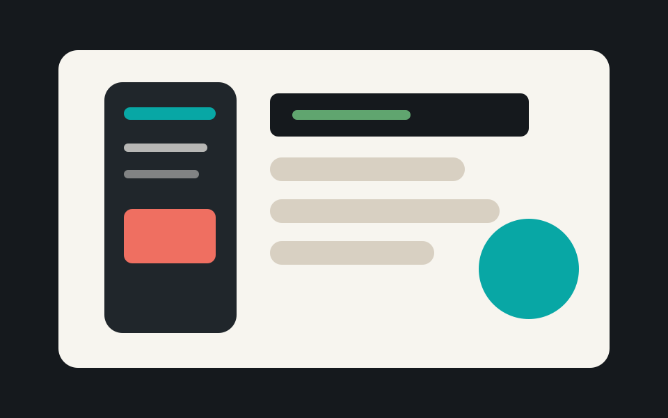
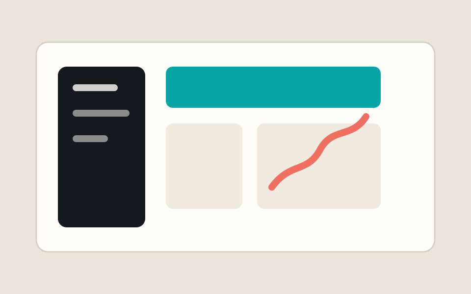
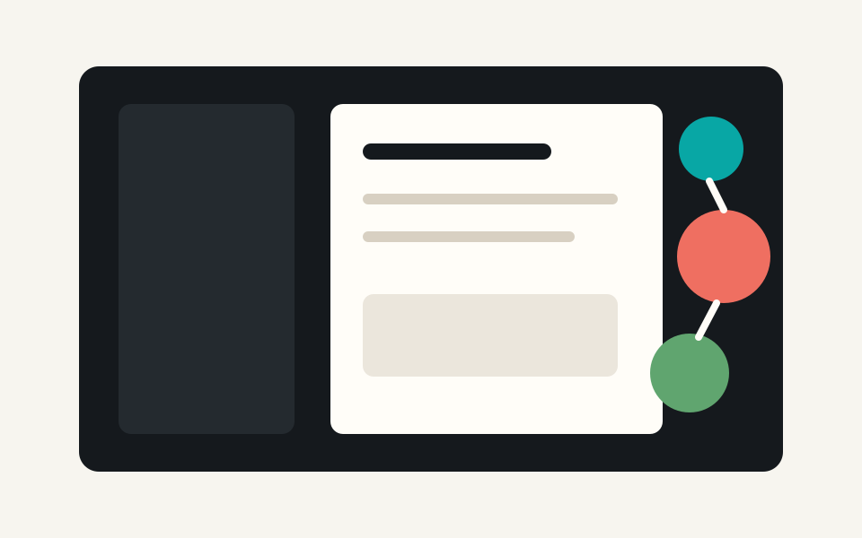
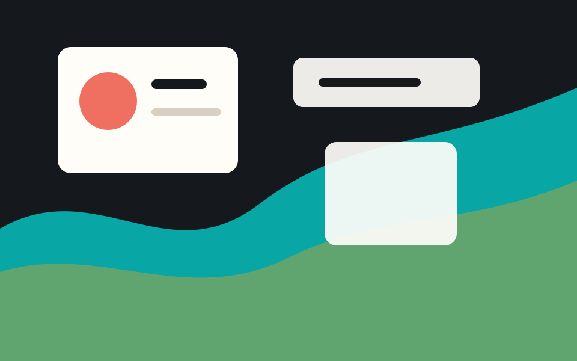
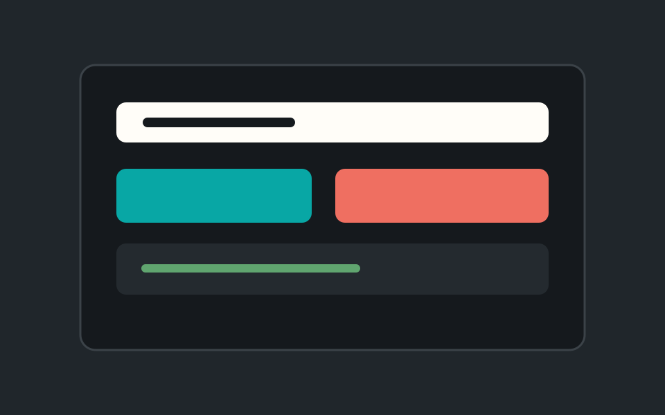
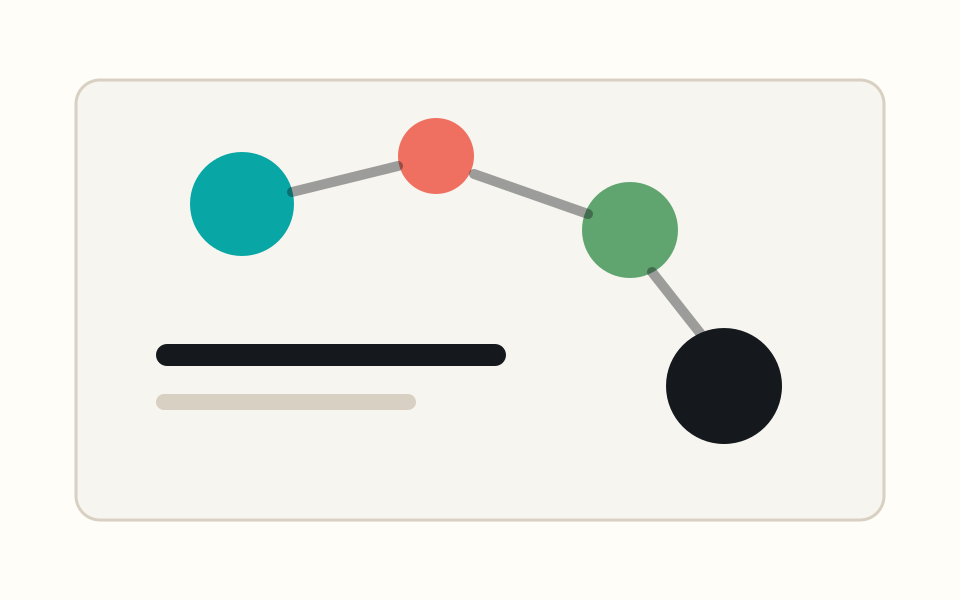

Projects
A working index for app ideas, shipped software, experiments, and open source work. Replace the placeholders as projects become real.

TaskFlow Mobile App
Daily planning, routines, and fast capture for personal productivity.
MobilePrototype

LedgerLite Finance Tool
A calm dashboard for budgets, categories, and spending reviews.
WebDashboard

Atlas Notes
A linked writing and knowledge base experiment for project decisions.
NotesResearch

WeatherLens
A forecast app concept with visual context and location-aware views.
APIMaps

DevKit Utilities
Small developer tools for formatting, conversion, and inspection.
ToolsCLI

Open Source Lab
Libraries, sample apps, and experiments that may become reusable.
Open SourceLearning